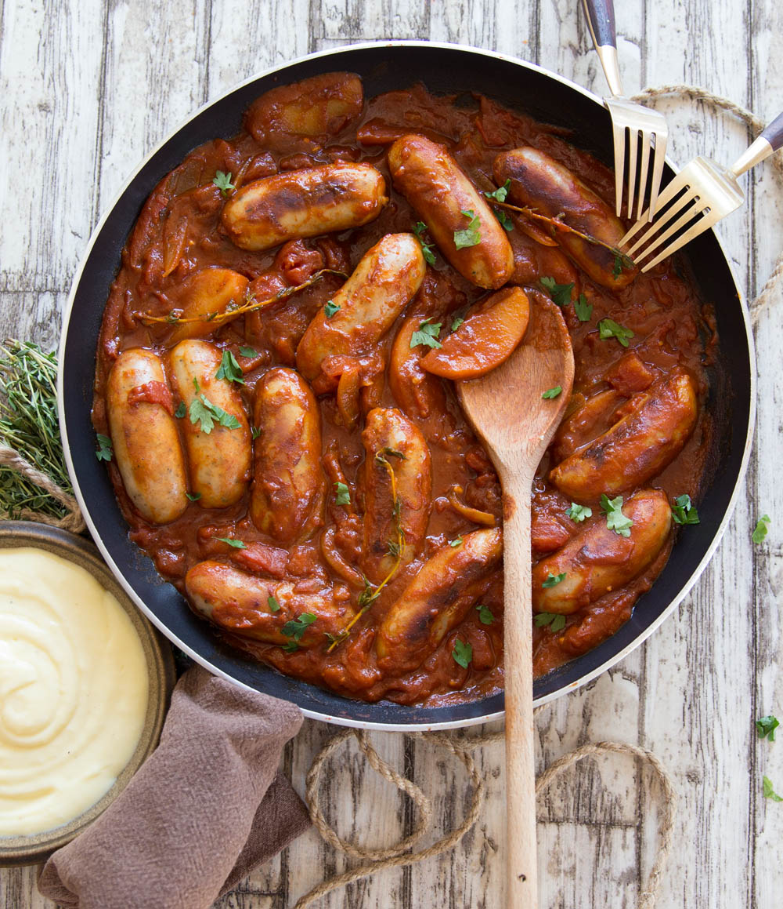

Sausage w!th sauce!

Description
This crockpot sausage recipe is a warm, easy meal made even easier in the slow cooker. These sausages may be served in sandwiches or over rice.
ingredients
- 8 (4 ounce) links fresh Italian sausage
- 1 (26 ounce) jar spaghetti sauce
- 1 green bell pepper, seeded and sliced into strips
- 1 onion, sliced
- 6 hoagie rolls, split lengthwise (Optional)
Steps!
- Place Italian sausage links, spaghetti sauce, green pepper, and onion into a slow cooker; mix until well combined.
- Cover and cook on Low for 6 hours. Serve on hoagie rolls.
I wanto to go back to the Menu!